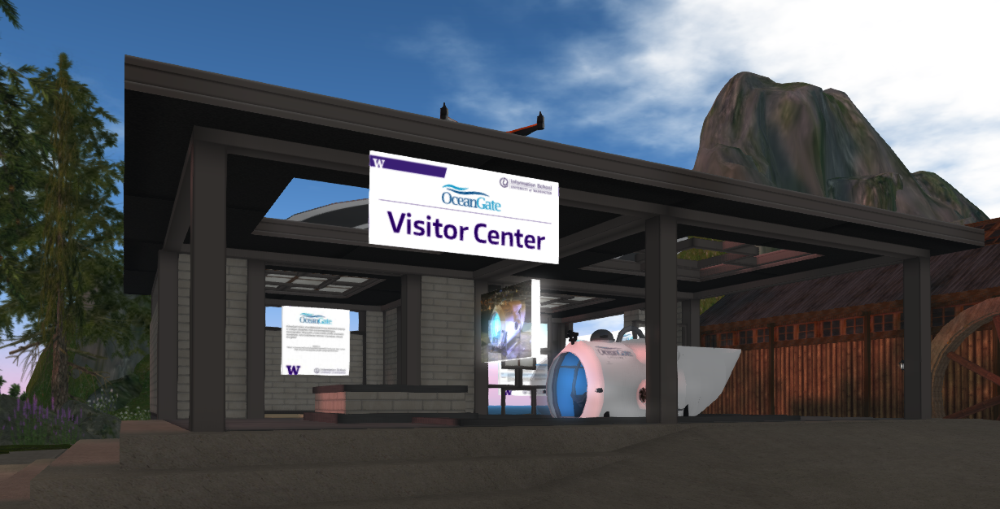

Virtual OceanGate
Our visitor center in Second Life
Summary
Virtual OceanGate is a digital replica of an OceanGate manned submersible, created in the Second Life virtual world. The purpose of this project was to demonstrate how immersive virtual environments can be used to educate, train, and inspire people about real world tools and their applications.
The real OceanGate Cyclops 1
Our virtual Cyclops 1
My Role
My role was experience producer, content writer, and presenter. I collaborated with 3D artists, coders, video producers, and front-end developers who helped bring the project to life.
Why Does This Matter?
Sending people out in submersibles for training and demonstration purposes is a time-consuming and expensive process. With an effective virtual simulation, OceanGate could reduce the costs of training, create better-prepared pilots, and closely monitor which areas of preparedness need attention before high-stakes ocean missions.
Real-world missions with the Cyclops 1 require a transport ship and a team of experts.
In Second Life, it only takes one person to move the submersible from land to water.
Design Process
Our most important task was to get our submersible
up and running, but we would only be able to include a few
active participants during our product demo. To keep onlookers engaged,
we needed a compelling narrative as part of the experience.
My job as experience producer was to pinpoint the key
factors that would make our experience both engaging and educational for passengers
and onlookers alike
I used a combination of competitive analysis and literature review to
define our key immersion factors, and then took a real mission from the
Cyclops 1 as a use case to create a compelling narrative.
The Final Design
Here are some of the key factors that went into our final design:
Presence
We created a feeling of spatial presence by populating the sea environment with a variety of sea creatures, plants, and objects to explore. Many of these components had their own sounds as well.
Gamification
To increase a feeling of engagement and encourage exploration, we added two types of gamification: hidden treasure chests and a scavenger hunt. The treasure chests would reward whoever explored an area first, whereas scavenger hunts gave participants key markers to look out for. These features created a feeling of social and self presence.
Storytelling
To illustrate a use case for an OceanGate submersible, while also keeping onlookers at the edge of their seats, we installed a leaking oil pipeline with a switch into our sea expedition. To preserve the pristine ocean environment, the submersible operator would have to flip the switch by maneuvering just right. It's more difficult than it sounds!
The Official Video
The Response
For our virtual presentation, we had about 30 onlookings inside Second Life and
at least 10 more watching from the chat program Sococo. Our audience was a mixture
of our classmates, teachers, and industry professionals from companies like Microsoft
and OceanGate.
James Reichert, a member of the Microsoft Hololens team, recorded and broadcasted
our demo on a big screen in the Microsoft office, writing later: "People can talk about HMDs
all they want, but this is truly VR." In his praise, he wrote "It's amazing that they not
only built a working 3-seat submersible after a real-world model, but fleshed out an entire
lagoon. I felt like this must be Disneyland...but Disneyland wasn't built in two weeks!"
Christian Saranson of OceanGate told us he "blown away" by what we had accomplished
in Second Life. This project motivated him to actively pursue the development of a
real virtual training program for his company.
To top it off, our 3D modeler and scripter, Mano Barkovics, was invited to the Oceans
2016 conference this summer, where he talked about the work we did and the broader
applications to ocean education!